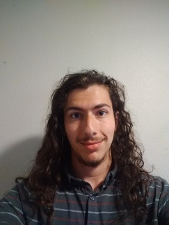

It is my hope during this class to learn to be able to create and modify functional and visually apealling web pages, I also hope to learn to be able to learn to interact with existing web pages with non-webbased programs. I don't remember a time in my life when I wasn't using computers regularly, a few years ago I started trying to learn some basic programming skills figuring it would be useful regardless of what I ended up doing. I ended up really enjoying the problem solving aspect of coding. My plans for after Tri-c are to go on and get a 4-year degree in software engineering or something related, I am not yet sure whether I will do this post graduation from tri-c or via transfer earlier. My big dream goal is to eventually lead a team to create my own large scale video game. My favorite Wikipedia page is the list of common misconceptions some of them are actually surprising because I was under the misconception, others are surprising because you have to wonder how anyone believed that.
